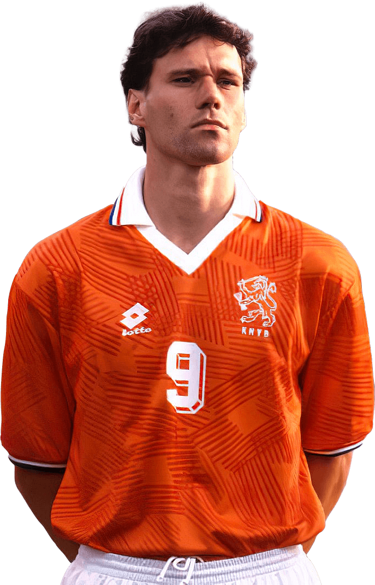

Van Basten
Marcel "Marco" van Basten é um ex-futebolista e atualmente treinador neerlandês. Atualmente é auxiliar no AZ Alkmaar. Segundo alguns, ele é considerado um dos jogadores mais talentosos do futebol.